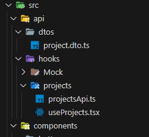

SWR 2.0: with React Hooks
Jan 08 2024
Setup
Install SWR - npm i swr
API Layer

project.dto.ts
export interface Project {
id?: string;
name: string;
description: string;
startDate: string;
endDate: string;
}
projectsApi.ts
export const ProjectsEndpoint = '/api/projects';
Custom Hook useProjects
useProjects.tsx
import useSWR, { Fetcher } from 'swr'
import { Project } from "../../dtos/project.dto"
import { ProjectsEndpoint } from './projectsApi';
export const useProjects = () => {
const fetcher: Fetcher<Project[], string> = (url: string) =>
fetch(`${url}`)
.then((response) => response.json())
const headers = { "Content-Type": "application/json" };
const mutatorOptions: MutatorOptions = {
rollbackOnError: true,
revalidate: false
};
let requestOptions = {
method: 'GET',
headers,
body: ""
}
const fetchWithRequestOptions = (url: string, options: RequestInit) => fetch(`${url}`, options)
.then((response) => response.json());
const { data: projects, error, isLoading, mutate } = useSWR<Project[], Error>(ProjectsEndpoint, fetcher);
return { projects, isError: error, isLoading };
}
To fully flush out the custom hook. Operations for create, update, delete are added.
In my main project, I needed to sort by a project's start date. To do this, I created a sorting function.
import { sortByStartDate } from '../../../helpers/helpers';
export const useProjects = () => {
...
const createProject = async (newProject: Project) => {
await mutate(
mutateProjects(`${ProjectsEndpoint}`, 'POST', JSON.stringify({ ...newProject })),
{
optimisticData: [...projects, newProject],
populateCache: ((result: Project, currentData: Project[] | undefined) => currentData ?
sortByStartDate([...currentData, result]) :
[]
),
...mutatorOptions
}
);
}
const updateProject = async (id: string = "", updatedProject: Project) => {
await mutate(
mutateProjects(`${ProjectsEndpoint}/${id}`, 'PUT', JSON.stringify({ id, ...updatedProject })),
{
optimisticData: [...projects.filter((project) => project.id !== id), updatedProject],
populateCache: ((result: Project | undefined, currentData: Project[] | undefined) => currentData && result ?
sortByStartDate([...currentData.filter((project) => project.id !== id), result]) :
[]
),
...mutatorOptions
}
);
}
const deleteProject = async (id: string = "") => {
await mutate(
mutateProjects(`${ProjectsEndpoint}/${id}`, 'DELETE', ''),
{
optimisticData: [...projects.filter((project) => project.id !== id)],
populateCache: ((result: boolean, currentData: Project[] | undefined) => currentData && result ?
sortByStartDate([...currentData.filter((project) => project.id !== id)]) :
[]
),
...mutatorOptions
}
);
}
const mutateProjects = async (fetchUrl: string, requestMethod: string, requestBody: string) => {
requestOptions.method = requestMethod;
requestOptions.body = requestBody;
return fetchWithRequestOptions(fetchUrl, requestOptions)
}
return { projects: sortByStartDate(projects), isError: error, isLoading, createProject, updateProject, deleteProject };
}
sortByStartDate helper function
// helpers/helpers.ts
export const sortByStartDate = (projects: Project[]) => {
return projects.sort((a, b) => new Date(a.startDate).getTime() - new Date(b.startDate).getTime());
}
useProjects Implementation
A general use would be for a list component. Which can be called ProjectList.tsx
import { AddEntity } from '../buttons/AddEntity';
import { AddProjectModal } from './modal/AddProjectModal';
import { EllipsisToggleItems } from '../buttons/EllipsisToggleItems';
import { Project } from '../../api/dtos/project.dto';
import React from 'react'
import { useProjects } from '../../api/hooks/projects/useProjects';
export const ProjectList = () => {
const { projects, isError, createProject } = useProjects();
const createNewProject = async (newEntity: Project) => {
return await createProject(newEntity);
}
return (
<>
<div className="flex items-center">
<h1 className="m-4 tile-marker text-2xl ">Projects
<AddEntity buttonText='Create Project +' modalComponent={AddProjectModal} modalSubmit={createNewProject} />
<span>
{isError &&
<>Error Loading Projects...</>
}
</span>
</div>
<div className='grid grid-cols-3 gap-4'>
{projects.length ?
<div className='grid grid-cols-3 gap-4'>
{projects.map((project, index: number) => {
return (
<div key={project.name + "-" + index} data-projectid="project" className="m-4 rounded shadow-md">
<div className="px-6 py-4">
<div className="flex justify-between font-bold text-xl mb-2">
{project.name}
<EllipsisToggleItems entity={project} />
</div>
<p className="text-gray-700 text-base">
{project.description}
</p>
</div>
<div className="px-6 pt-4 pb-2">
<div>
Project Start - {new Date(project.startDate).toDateString()}
</div>
<div>
Project End - {new Date(project.endDate).toDateString()}
</div>
</div>
</div>
);
})}
</div>
: null
}
<>
)
}
The CSS classes in the ProjectList component come from Tailwind CSS. Setting up Tailwind is
straightforward and any weird
configuration issues can be found online.
Why use SWR?
Setting up SWR is easy and allows the extension of using custom hooks in React, eliminating the need to use axios for setting up the REST Client.
Combining the browser's built-in Fetch with useSWR's hook gets the job done. The logic is encapsulated within a custom hook
that can be imported into any React functional component.
The implementation leverages SWR 2.0's functionality, primarily the optimistic UI updates. This allows
instant feedback to the user, and in case of an API error, it rolls back the data to the previous state. As I
continue using SWR, any new developments I will incorporate into this article.
I found testing the hook to be rather simple once the configuration is understood correctly. In the future I will have an article to go
into the details of setting up and testing the custom hook against a mock API.